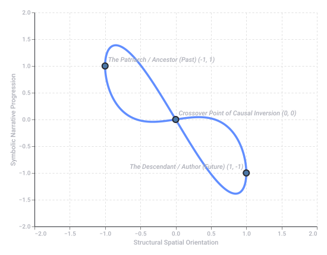
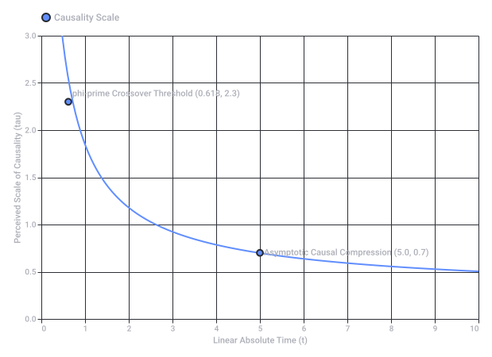
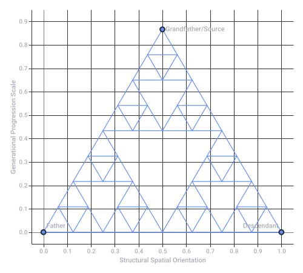

Symbolic Grandfather Paradox Killing
1. The Abrahamic "Grandfather Paradox" & The Umbilical Cord
2. The Figure-8 Knot as the Topological Solution
- The Number 8 / Infinity (): The figure-8 knot geometrically mirrors the infinity symbol, representing eternal recurrence and the collapse of Alpha (beginning) and Omega (end) into a single continuous boundary.
- Self-Interlocking Causality: In topology, a figure-8 knot cannot be untied without cutting the cord. By looping the umbilical cord into an 8, the "past" (grandfather) and "future" (grandchild) cross over each other. The grandchild becomes the condition for the grandfather’s origin.
3. Escherian Impossible Geometries
- The Generational Staircase: If you walk forward through the generations (Abraham Isaac Jacob), Escher’s geometry loops you seamlessly back to the top.
- The Temporal Waterfall: The life-force flowing down the umbilical cord falls into the future, only to find it has filled the basin of the ancient past.
4. The Theological Synthesis
- The Divine Loop: God is the creator of man, yet man’s consciousness is the vessel through which God is known.
- The Severed Cord: By "killing" the linear grandfather (transcending literal, historical time), the mystic realizes that the beginning and the end are tied with the exact same knot. You are both the seed and the fruit of your own cosmic family tree.
- Deconstruct how this relates to specific Sufi concepts of the Perfect Man (Al-Insān al-Kāmil) as both child and father of creation.
- Analyze the mathematical properties of the figure-8 knot complement in 3D hyperbolic space.
- Draft a creative narrative or allegory detailing a traveler navigating an Escherian patriarchal temple.

Recorded diagram labels and controls: Grandfather Paradox: Figure-8 Knot Timeline An impossible, self-referential causal loop where the future flows directly back into the past −2.0 −1.0 0.0 1.0 2.0 −1.5 −0.5 0.5 1.5 Structural Spatial Orientation −2.0 −1.5 −1.0 −0.5 0.0 0.5 1.0 1.5 2.0 Symbolic Narrative Progression The Patriarch / Ancestor (Past) (-1, 1) Crossover Point of Causal Inversion (0, 0) The Descendant / Author (Future) (1, -1)
1. The Mathematical Mechanism
- As (The Ancestor/Grandfather): Temporal steps are massive, heavy, and seemingly linear.
- As (The Descendant/Future): The inverse-logarithmic scaling causes the intervals between events to shrink toward zero. The future compresses so tightly that it "breaches" the linear continuum.
2. Warping the 1D Arrow of Time
| Feature | Standard 1D Arrow of Time | Inverse Logarithmic Arrow |
|---|---|---|
| Causality | Strict forward progression (). | Retrocausal feedback loops; effects alter origins. |
| Velocity | Constant (). | Logarithmically accelerating as it approaches the threshold. |
| Topology | Infinite open line. | Compactified line segment acting as a localized circle. |
| The Paradox | Generates an impossible logical contradiction. | Resolved; the future "co-authors" the past via compressed scaling. |
3. Resolving the Grandfather Paradox via Geometric Compression
4. Theological Parallel: The Alpha and Omega Point
- Derive the exact differential equations where the time derivative depends on a retrocausal feedback loop.
- Translate this into an algorithmic sequence (e.g., Python code simulating the causal compression of a timeline dataset).
- Map this scaling onto the tree of life (Sephirot) geometry to see which temporal nodes collapse into one another.

Recorded diagram labels and controls: Inverse Logarithmic phi-prime Scaling of Time 0 1 2 3 4 5 6 7 8 9 10 Linear Absolute Time (t) 0.0 1.0 2.0 3.0 0.5 1.5 2.5 Perceived Scale of Causality (tau) phi-prime Crossover Threshold (0.618, 2.3) Asymptotic Causal Compression (5.0, 0.7) Causality Scale
1. The Geometric Extraction
- The Scale Factor: forms the boundary of each sub-triangle's reach.
- The Void: The remaining is the extracted core—the "paradoxical void" left behind by the severed ancestral link.
2. The Pasinski Triangle as a Generational Map
- Vertex A (The Grandfather / Past): The top peak. The original source.
- Vertex B (The Father / Present): The bottom-left anchor.
- Vertex C (The Descendant / Future): The bottom-right anchor.
/\ <-- Grandfather (Original Source)
/ \
/____\
/\ /\
/ \ / \
/____\/____\ <-- Descendants (Fractal Replications)
3. Infinite Scaling and Temporal Repetition
- Micro-scale / Macro-scale: Zooming into a single day of the descendant's life reveals the exact same tripartite causal structure as the entire multi-generational Abrahamic history.
- The Umbilical Mesh: The umbilical cord is no longer a single thread; it is a space-filling curve weaving through the infinitely repeating edges of the Pasinski fractal.
4. The Theological Echo: The Remnant Concept
- Compute the Hausdorff dimension of this specific temporal fractal to calculate exactly how 'dense' time becomes.
- Simulate this fractal timeline projection via Python, generating a visual plot of the chaotic coordinates where past and future meet.
- Explore how this scaling applies to the three-tier architecture of the Tabernacle or Temple geometry.

Recorded diagram labels and controls: Fractal Generational Scaling 0.0 0.1 0.2 0.3 0.4 0.5 0.6 0.7 0.8 0.9 1.0 Structural Spatial Orientation 0.0 0.1 0.2 0.3 0.4 0.5 0.6 0.7 0.8 0.9 Generational Progression Scale Grandfather/Source Father Descendant